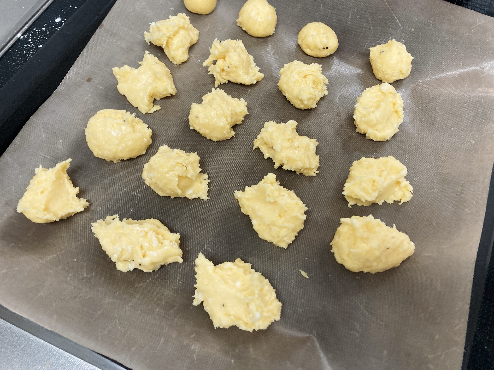
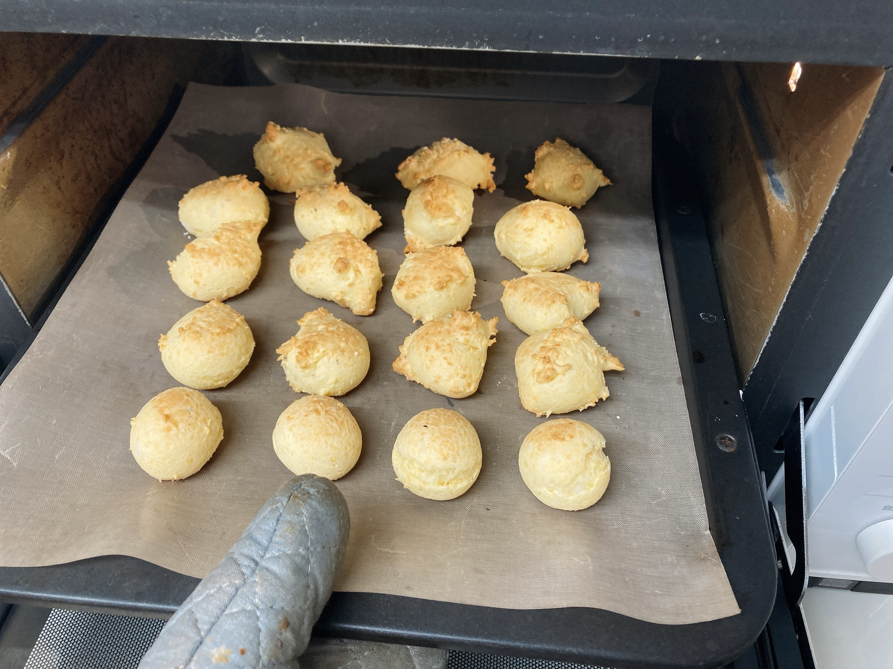
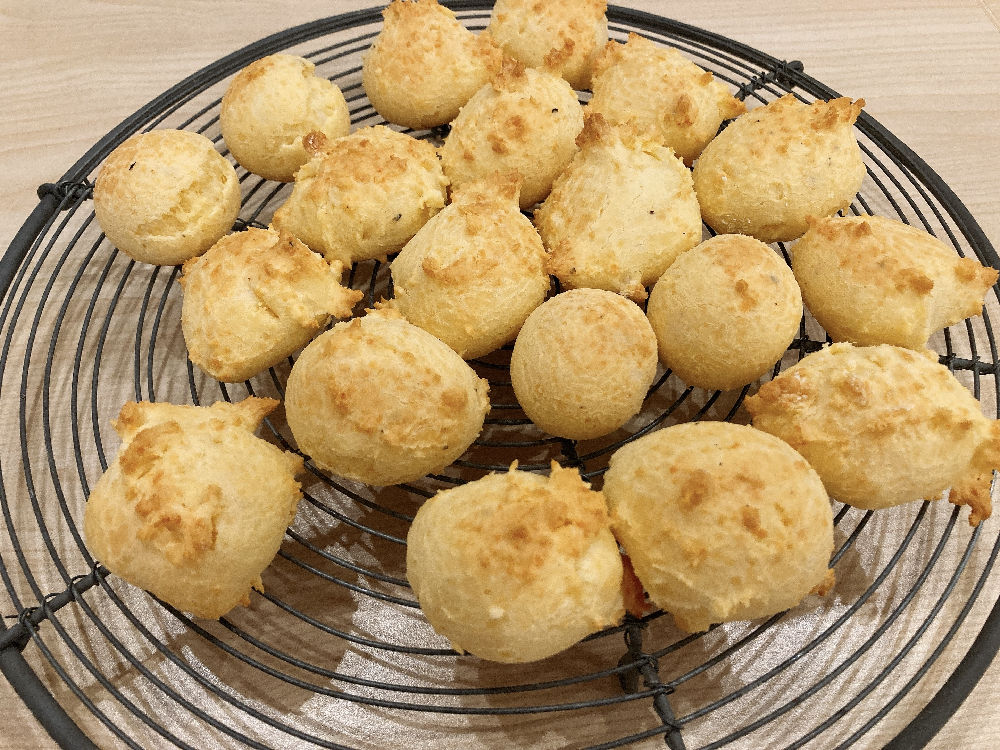

菓子作りで失敗しかける
あやうく
制作・著作
━━━━━
ⓃⒽⓀ
しかけるところでした。まじで血の気引いた。
何をしでかしたのかというと特に何かしでかしたわけではなく、ただいつもどおり夕飯用にポンデケージョを作っていました。計量を間違えた気配もなく（もしそうならもっと悲惨なはず）、ただ、生地を捏ね終わった段階で何故か手で生地を丸められない。悲惨なくらいベタつく。明らかに水分量が多いのです。ん？？？どした？？？
一昨日同じレシピで問題なく焼けたはずです。流石にオリーブオイル20gと牛乳50gは間違えないし、仮に間違えたとして片方が20片方が50であることは確実に覚えていたので、二者が入れ替わったとしても（油の割合が違うというそれはそれでやばい状態ではあるが）水分量が多いという事態には至らないはず。……あー。きっと卵ですね。私の買った全卵がレシピの想定する「全卵1個」より随分と大きかったんでしょう。少なくともキャッサバ粉を入れた段階では何も問題ありませんでしたから。
と冷静に分析している場合ではない。明らかにべたべたでどうしようもないが、なんとかして焼成にまで持っていかないと粉チーズ50gが無駄になるという恐ろしい事態である。やばすぎ。内心涙目。とりあえず水分が多すぎるのは確実なのでキャッサバ粉を追加。まだべたべたなのでまた追加。追加。追加。なんだこれ解決せんぞ？？？
内心大号泣しながら格闘すること数十分。一体何g追加したのかわからなくなったところで、これ以上同じこと繰り返すと後々キャッサバ粉足りなくなるのでは？と思い至る。どうやら丸いポンデケージョちゃんは諦めないといけないらしい。でもとりあえずなんとかして焼かなきゃいけない。逆になんとかして焼けばなんとか食える状態にはなるはず。入れたものはまんまポンデケージョなわけだし。

結局、スプーン2本で分割してなんとかするとかいう暴挙に出ました。上にちらっと写ってるのはなんとか手で丸められた子達。お菓子ならスプーンで生地を型に入れるなんてのは日常茶飯事なので、その経験が効いてよかった。ノリとしてはマフィン生地よりちょっと固いくらいでしたね。ポンデケージョじゃないのか君達。
普段より表面積が大きいので気をつけて様子見ないとなあと思いつつ、このままオーブンに突っ込みます。180度、20分後。


なんとかなりました。あたかも「いやあ実は俺たちちゃんとポンデケージョなんすよ」みたいな顔して丸くなって出てきたの、腹立つとか安堵とか全部通り越して愛おしく思えてきましたね。食ったら笑けてくるくらいちゃんとポンデケージョでした。めでたしめでたし。
結論：「全卵1個」を許してはならない。
次からは別皿で溶かれて様子見つつ生地に追加された後、余った分を私に鬼の形相で捨てられるかわいそうな全卵が現れることでしょう。誰も救われない、かなしいせかい。